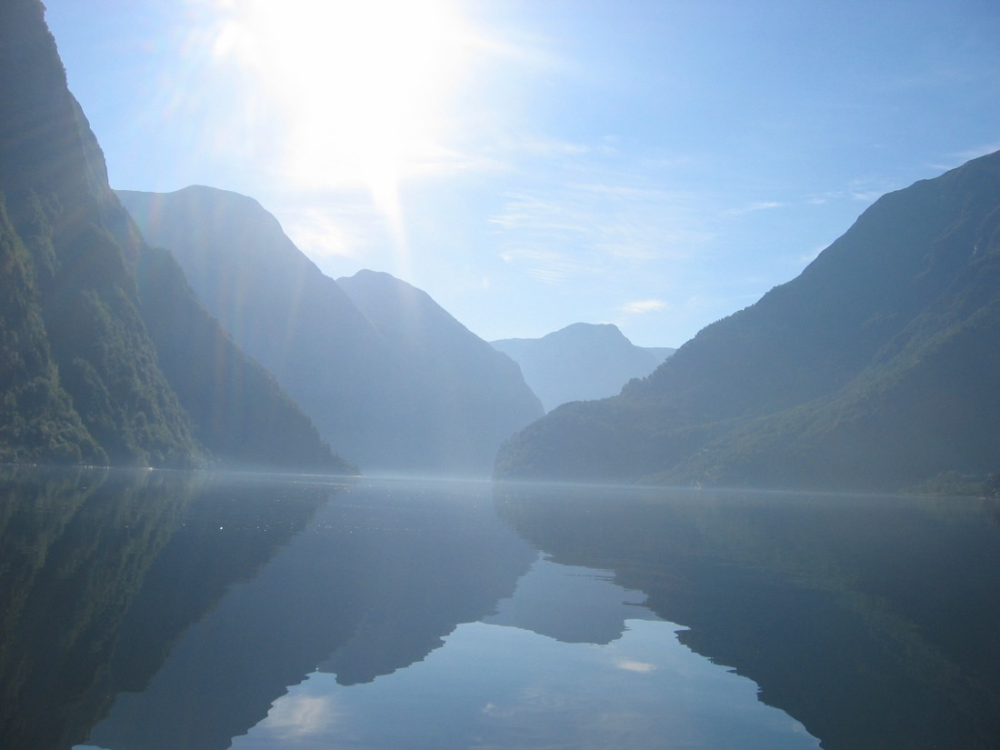
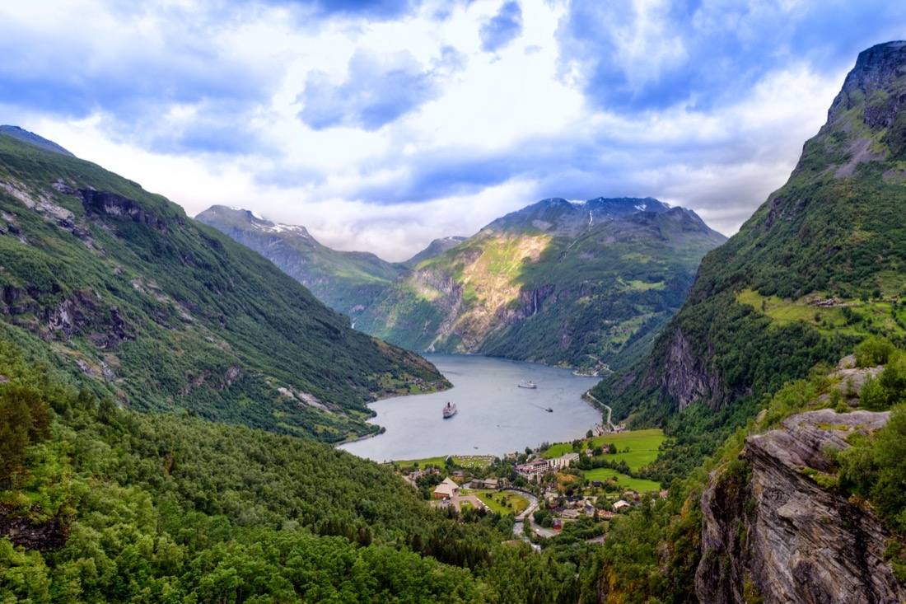
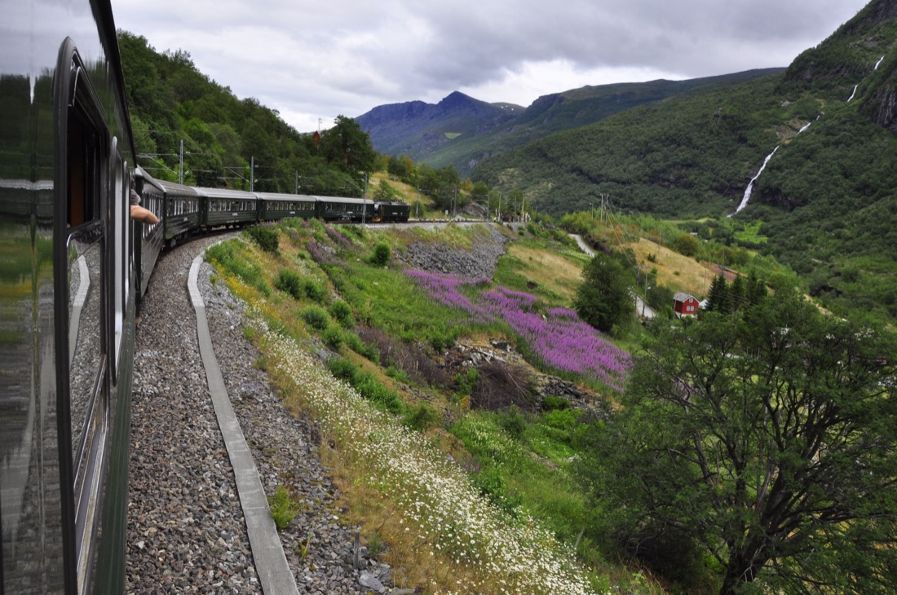
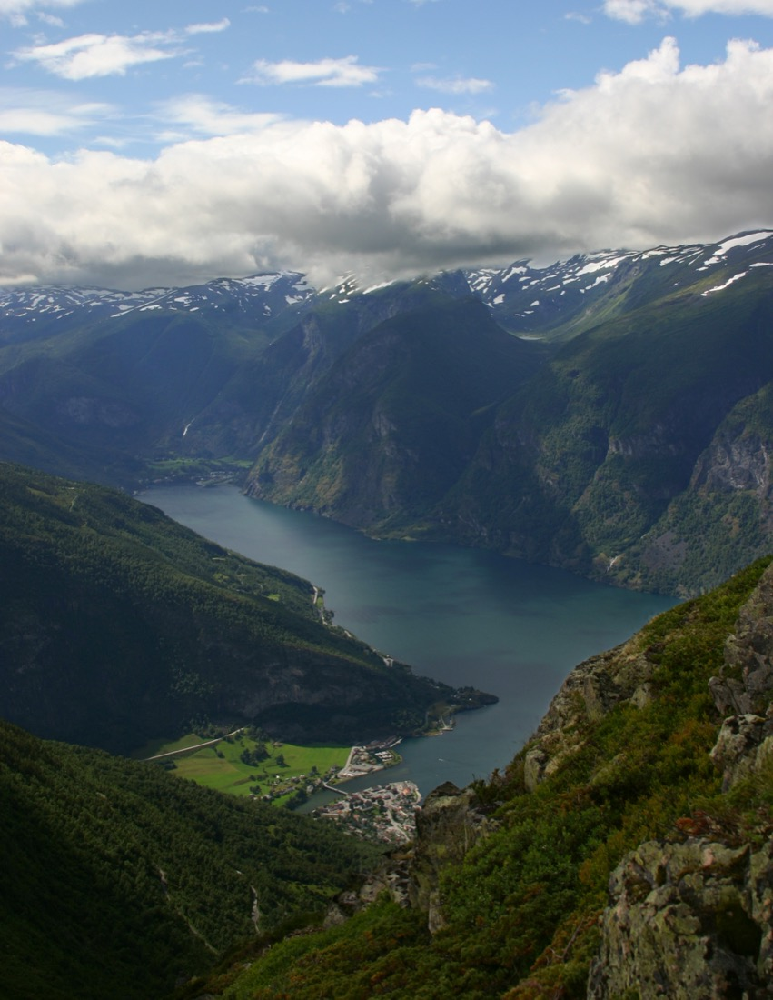
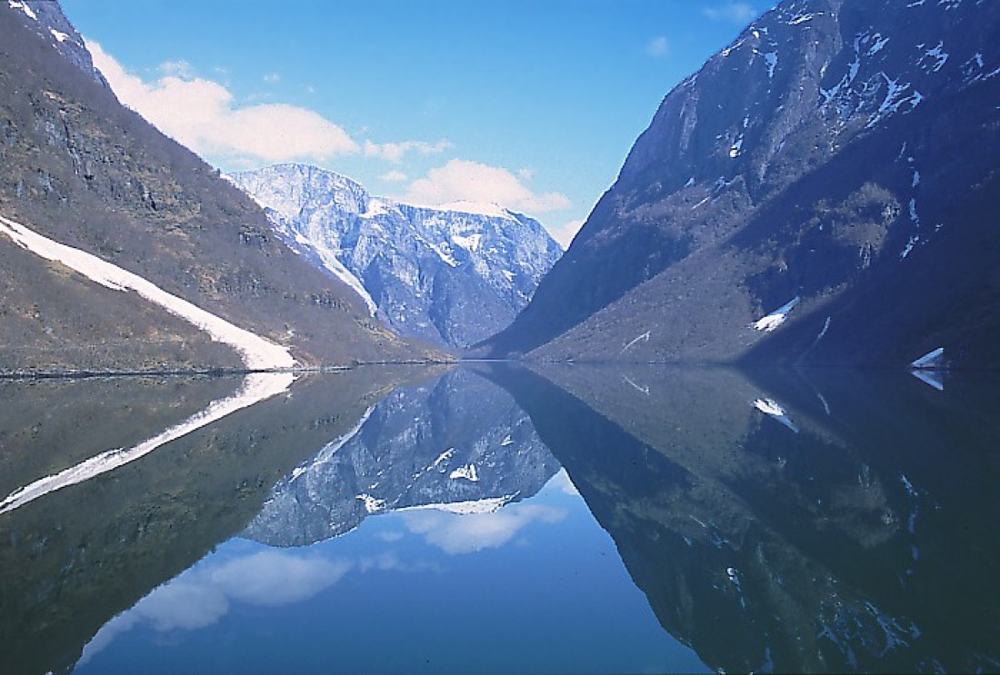
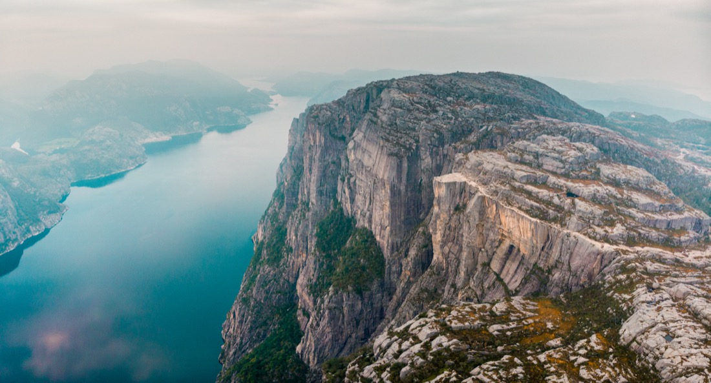
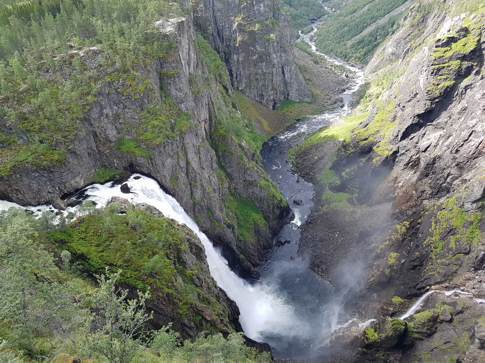
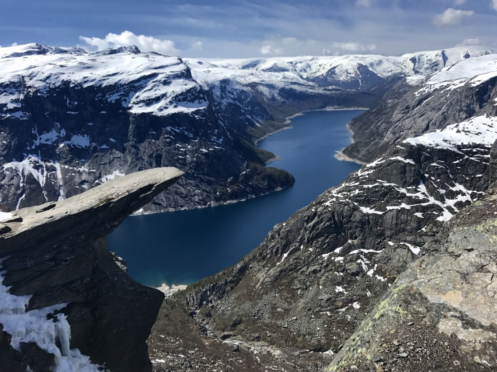
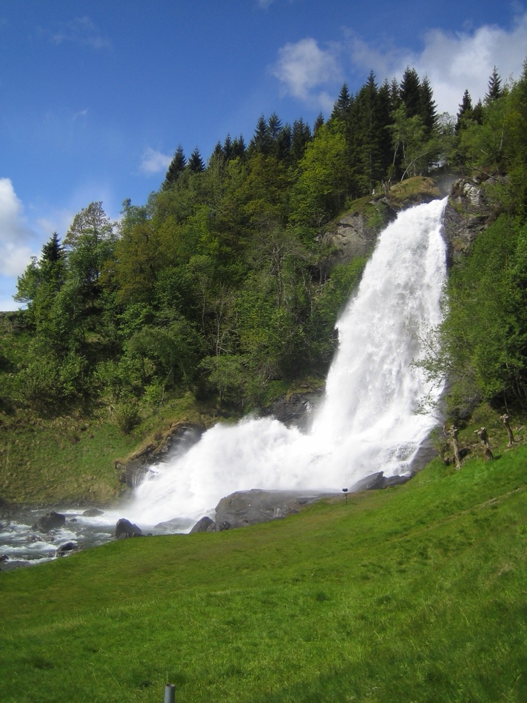

Фьорды — выбери главные.
С твоими двумя рычагами — перелёт по месту и сдвиг терапии на день — почти все эти фьорды реальны. Каждый стоит одного «окна» между приёмами, поэтому выбери 2–3 обязательных (назови номера) — остальное подстрою. Многие рядом с Фломом (1, 3, 4, 5) — это одна поездка.

1Нерёй-фьорд
Самый узкий фьорд мира, ЮНЕСКО. Поезд + тихий электрокруиз меж отвесных стен.
📍 Из Флома · 2,5–3 ч от Бергена

2Гейрангер-фьорд
Самый знаменитый фьорд, водопад «Семь сестёр». Открыточная Норвегия.
📍 ✈ Берген→Олесунн 45 мин + круиз · 1–2 ночи

3Фломская ж/д
Одна из красивейших ж/д мира: 865 м спуска за 20 км, водопад Кьосфоссен.
📍 Из Флома · в связке с Нерёй-фьордом

4Аурландс-фьорд + Stegastein
Смотровая-трамплин на высоте 650 м прямо над фьордом.
📍 Рядом с Фломом · 2,5–3 ч

5Согне-фьорд
Король фьордов — самый длинный (204 км) и глубокий. Флом на его рукаве.
📍 Из Флома вглубь · 3+ ч

6Прейкестулен
«Кафедра» — плоская скала 604 м над Люсе-фьордом. Самое драматичное фото.
📍 ✈ Берген→Ставангер 45 мин + хайк ~4 ч

7Вёрингсфоссен
Самый знаменитый водопад (182 м) + новый мост-смотровая над пропастью.
📍 Внутр. Хардангер · ~2,5 ч

8Тролльтунга
«Язык тролля» — самый эффектный кадр Норвегии.
📍 Хардангер (Одда) · хайк 10–12 ч / 28 км
 9
9Хардангер-фьорд
«Сад Норвегии» — цветущие склоны, водопады, широкая вода.
📍 Близкая сторона 1 ч 15 · день-поездка

10Стейнсдалсфоссен
Водопад, по тропе под которым идёшь ЗА струёй воды.
📍 Нурхеймсунн · 1 ч 15